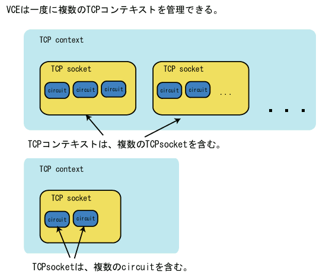

VCEにはTCPのコネクションを管理するために3段階の構造(体)を定義する。 最も大きな構造がTCPコンテキストで、 TCPコンテキストは複数のTCPコネクション(ソケット)を管理する。 そして1本のTCPコネクションには、複数のサーキット(circ_t)が含まれる。 VCEは1本のTCPコネクション中に複数の仮想回路を設定できるようになっているので それを扱うためにこのような3段階になっている。 tcpcontextの階層図を以下に示す。
サーバ専用の設定項目(ソケットをバインドするアドレス)や、 クライアント独自の設定項目(接続先IPアドレス等)、 両方に共通の項目(暗号化など)があり、すべてをまとめてTCPコンテキストという。 TCP/IPネットワーキングにおいて、 サーバ側とクライアント側の実装には異なる点がいくつかあるため、 VCEでは、サーバコンテキストとクライアントコンテキストという、 2種類のTCPコンテキストを用意する。これら2種類を切りかえるためには、 vce_tcpcontext_create 関数の第一引数を1にしたり0にしたりする。 またこれらのTCPコンテキストを操作するための基本となる変数の型が tcpcontext_t であり、 vce.h で定義されている。
サーバコンテキストは、TCPのサーバを管理する。 1つのサーバコンテキストは1個のbind-listenされたサーバソケットに対応し、 複数のコネクションを用いたネットワークサービスを提供する。 サーバコンテキストを使うには以下の段階を踏む。
クライアントコンテキストは、TCPのクライアントを管理する。 クライアントコンテキストを使うには基本的には以下の段階を踏む。
TCPコネクションを直接操作するには、 conn_t 構造体を使い、 仮想回路(circuit)を直接操作するには、 circ_t 構造体を使う。 これらの構造体は、 vce.h で定義されている。
TCPコンテキストは、コネクション(conn_t)と仮想回路(circ_t)に対して 別々にソースアドレス制限をかけるフィルタを装備している。 なぜ別々に設定できるかというと、中継サーバがconn_tを使用して 本サーバにアクセスしている状況で中継サーバにアクセスしてくる クライアントのソースアドレスを制限したいからである。 中継サーバは通常のアプリケーションでは本サーバの近くに置かれ、 厳密にアドレスフィルタをかけ、 クライアントに関しては自由に接続させるという風に使う。
デフォルトではTCPコンテキストのソースアドレスフィルタはOFFになっていて、 すべての接続要求を受けいれる。vce_tcpcontext_add_conn_ipv4_filter 関数などを用いてひとつでもフィルタを指定すると、 まずすべての接続をデフォルトで拒否するようになり、 その中からACCEPT設定になっているソースネットワークアドレスを持つ クライアントだけを検索して、接続を許可するかどうかを決定する。 したがって、ただひとつのネットワークからの接続を受けいれる設定にする場合は、 たとえば以下のようなコードを書けばいいことになる。
vce_tcpcontext_add_conn_ipv4_filter(t,"192.168.0.0","255.255.255.0", FILTER_POLICY_ACCEPT );以上のコードにより、 192.168.0.* ネットワークからの接続要求だけ受けいれる設定となる。